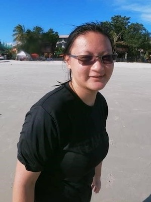

|  | CHOO Min YiHonours Student
Email: e0052767(AT)u.nus.edu |
Background
I am a final year Life Science major with a specialisation in Environmental Biology. My interests are in phylogenetics and morphology of marine organisms. Previously, I did two undergraduate research projects, one on the evolutionary history of the Merulinidae family of stony corals, and another on the interactions between sand waves in the North Sea with their benthic communities.
Project
Globally, elasmobranch (sharks, rays, skates and sawfish) populations are declining, a consequence in part from the demand for shark and ray products in many Asian communities throughout the world where they are served in soups during special events or used as Traditional Chinese Medicine. Singapore is the second-largest importer and re-exporter of shark fins in the world in terms of value, and also the 14th largest importer of shark meat by volume. For my Honours project, I will be characterizing the extent of the retail trade in guitarfishes and wedgefishes through DNA barcoding, including a focus on product labelling, as well as characterizing the gill plate trade through trader surveys and DNA barcoding with the objective of identifying sources, potential trade routes and current market trends. I hope the findings will provide better insights into the high value trade of elasmobranches, to facilitate policy decisions and regulation.